Role Mining
Role mining aims to reduce the cost of entitlement management by automating entitlement assignments, via the analysis of existing assignments. See the Automate Assignments topic for additional information.
Overview
After the role catalog is established, the Compute Role Model Task is able to assign single roles to users according to their attributes which are used as assignment criteria.
For example, in the AD, entitlements are given through group membership. Integrators create a navigation rule to assign each group to the users who have the corresponding single role. Then, the Compute-RoleModel task is able to assign single roles to users according to their existing group membership.
In addition to group membership, the assignment of an entitlement to users could also depend on users' attributes like their location, position title, etc.
Now that users received their roles, the role mining tool can analyze these assignments and deduce Single Role Rule which will assign single roles to certain users matching given criteria.
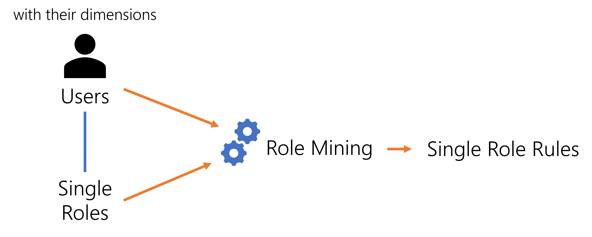
Role mining is a Machine Learning process. It is a statistic tool used to emphasize the Conforming Assignments that constitute the key criteria for existing role assignments. It detects the most probable links between identities dimensions and their roles in order to suggest the appropriate entitlement assignment rules.
For example, suppose that 80% of Netwrix Identity Manager (formerly Usercube)workers in Marseilles have access to an application "App". Then, role mining is most likely to recognize the working site as a relevant dimension, and suggest to create a rule that gives the "App" access to users whose site is Marseilles.
Role mining being a statistic tool based on existing entitlement assignments, it appears useless if the role model contains fewer than 2,000 role assignments. Then, start by reinforcing the Create Roles in the Role Catalog .
Technical Principles
Role mining works through Mining Rule that Identity Manager applies with the Get Role Mining Task .
Entitlement differentiation with rule types
Mining rules can be configured to generate:
-
automatic rules, i.e. rules which assign roles automatically with or without a validation;
-
suggested rules, i.e. rules which don't assign roles directly, but suggest them during an entitlement request for a user.
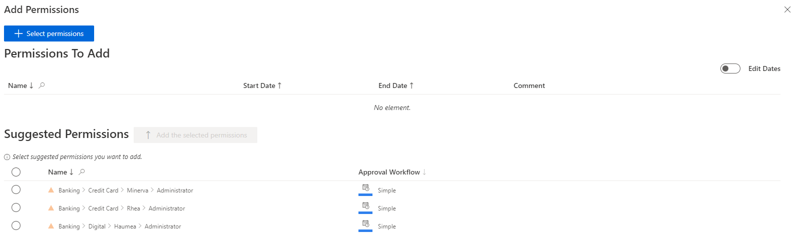
You can generate both automatic and suggested rules for the same role, with different precision levels and different approval workflows.
Consider an organization where an unknown ratio of users have a given role. Using the precision settings, we can create a mining rule to generate automatic assignment rules when the ratio is above 95% and a second mining rule to generate suggested assignment rules when the ratio is between 75% and 95%.
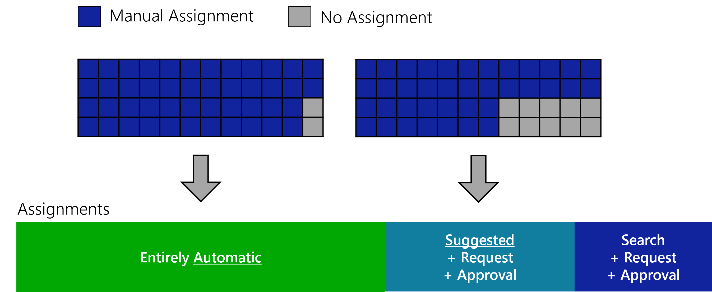
You can also differentiate entitlements according to their sensitivity, for example require additional reviews following the request of a sensitive entitlement:
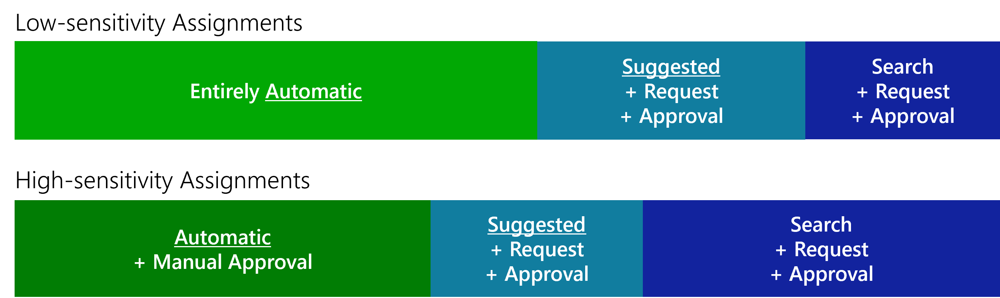
The automation of entitlement assignments according to sensitivity brings greater confidence in basic entitlements assignment which won't need to be certified anymore. Thus, automation lets certification campaigns focus on more sensitive entitlements.
Role mining should be performed first for automatic rules as they are stricter precision-wise. Thus, automatic rules should always have priority over suggested rules (via the Priority setting).
Impact on users' entitlements
Consider that all users from a given organization have a given role. Then role mining will create a single role rule to assign automatically this role to any user of this organization. Then users' entitlements remain unchanged:
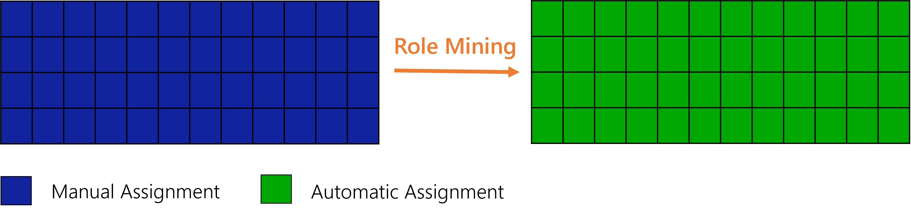
Now consider that half of users in the organization have the role. Then role mining will not generate a role assignment rule. Then users' entitlements remain unchanged:
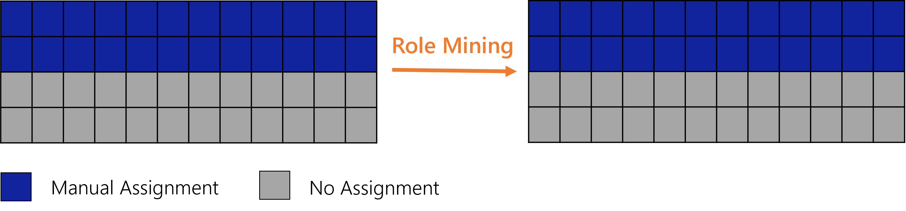
Starting from the previous example, consider now that users progressively request the role. As long as the ratio is below a given threshold, then role mining will not generate a role assignment rule. Then users' entitlements remain unchanged:
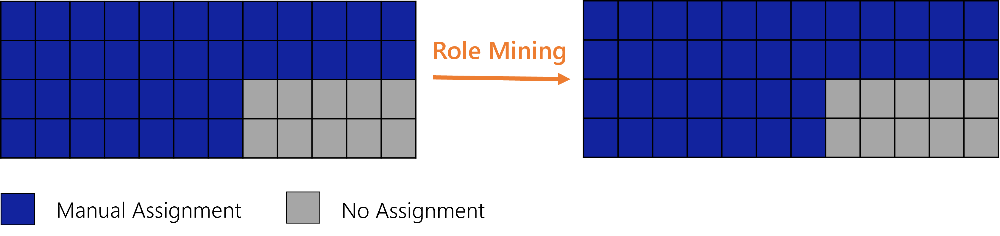
Starting from the previous example, consider now that users continue requesting the role. As soon as the ratio is above the threshold, then role mining will create a single role rule to assign automatically this role to any user in the organization. Then a few users are going to get the entitlement:
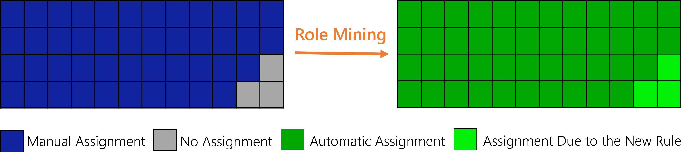
Starting from the previous example, consider now that, as a result of a reorganization or an access certification for example, some users do not have the role anymore. If the ratio is below the threshold, then role mining will remove the single role rule. If the role (or its policy) is configured with a Single Role , users who need the role will not lose it. Then users' entitlements remain unchanged:
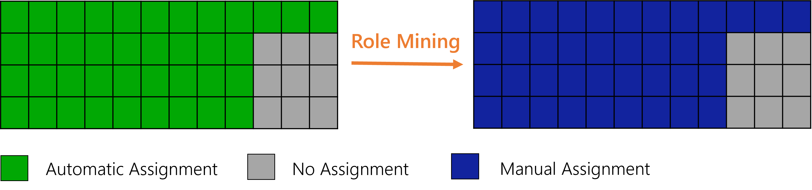
Perform Role Mining
See the Perform Role Mining for additional information.
Simulation
Be aware that you can configure the Get Role Mining Task to generate role assignment rules either directly or in a Simulation.
Simulating the results of role mining allows a knowledgeable user to analyze the impact of role mining on the role model, before applying them.
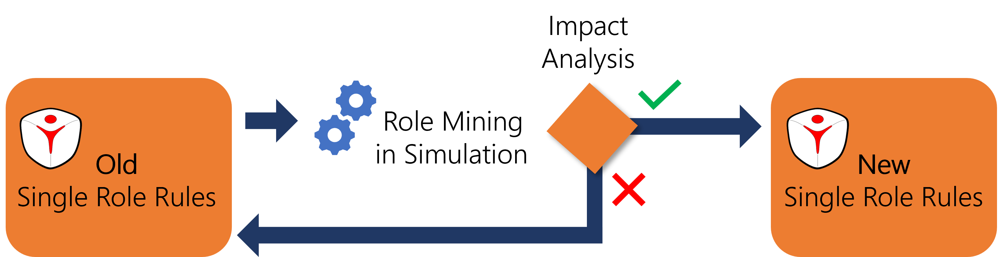
The simulation tool gives another point of view on the role model as it emphasizes the changes.
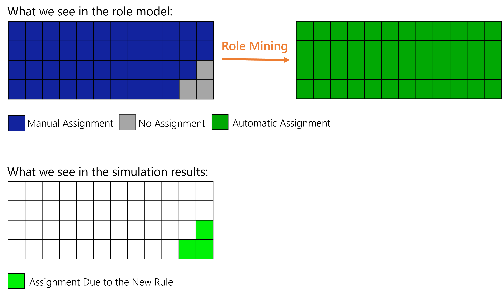
Identity Manager recommends simulating role mining before applying the results.